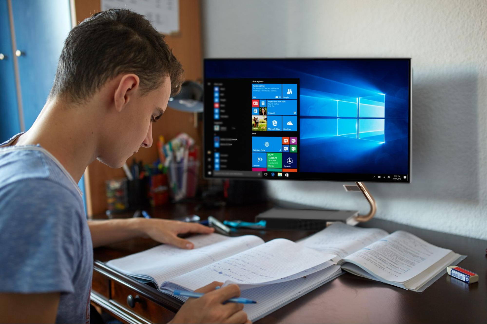

Комп'ютери сьогодні стали невід’ємною частиною повсякденного життя. Вони використовуються як для роботи, так і для розваг. Завдяки доступності та доступним цінам, персональним комп'ютером сьогодні може скористатися практично кожен. Сучасні комп'ютери оснащені потужними процесорами та великою кількістю оперативної та довгострокової пам’яті, що дозволяє виконувати складні обчислення та зберігати великі обсяги інформації. Серед популярних сфер застосування - офісна робота, навчання, комп’ютерні ігри, мультимедіа, наукові дослідження тощо. Серед останніх тенденцій варто зазначити зростання популярності планшетів та інших мобільних пристроїв. Завдяки компактним розмірами та можливості підключення до Інтернету, ці гаджети з кожним роком стають все популярнішими. Отже, сучасні комп’ютери продовжують стрімко розвиватися, стаючи все потужнішими, компактнішими та доступнішими. Це дозволяє застосовувати їх у найрізноманітніших сферах нашого життя.
Серцем сучасних ПК є багатоядерні процесори від таких виробників як Intel і AMD. Вони забезпечують високу продуктивність багатозадачної роботи. Популярні моделі процесорів: Intel Core i3, i5, i7, AMD Ryzen 5, AMD Ryzen 7.
Об'єм оперативної пам'яті сучасних комп'ютерів становить від 4GB до 128 GB. Чим більший об'єм RAM, тим швидше працює ПК при одночасному запуску декількох вимогливих програм.
Відеокарти бувають двох типів: інтегровані та дискретні. Дискретні відеокарти потужніші, дозволяють комфортно працювати з графікою, 3D моделями. Популярні GPU: NVIDIA GeForce RTX, AMD Radeon RX.
Накопичувачі даних представлені жорсткими (HDD) та твердотільними (SSD) дисками. SSD диски працюють набагато швидше за звичайні HDD. Ємність дисків від 256 ГБ до кількох Тб.

Сучасні комп’ютери та інформаційні технології є невід’ємною частиною ведення бізнесу. Вони оптимізують та автоматизують багато бізнес-процесів, дозволяють аналізувати великі масиви даних, суттєво прискорюють комунікацію та прийняття рішень.
За даними аналітичної компанії International Data Corporation, у 2022 році світові витрати підприємств на інформаційні технології склали понад 4 трлн доларів США та продовжать зростати у майбутньому
Серед ключових напрямів використання ІТ в бізнесі - хмарні сервіси, кібербезпека, Big Data, штучний інтелект, Інтернет речей. Вони дозволяють підвищувати ефективність, отримувати цінні знання з даних та передбачати тенденції
Сучасні відеоігри вимагають потужного апаратного забезпечення для якісної роботи. Тому ігрова індустрія є рушієм розвитку комп’ютерних технологій.
Для комфортного запуску найновіших ігор потрібні багатоядерні процесори та продуктивні відеокарти від провідних виробників, таких як Intel, AMD, Nvidia. А геймерські монітори з високою частотою оновлення забезпечують чітку і плавну картинку під час динамічного ігрового процесу
Також розробники ігор використовують переваги штучного інтелекту для створення захопливого ігрового процесу з непередбачуваною поведінкою NPC. Все це потребує обчислювальних потужностей, які забезпечують саме сучасні ПК
Сучасні інформаційно-комунікаційні технології активно впроваджуються в освітній процес на всіх рівнях навчання. Комп’ютери та цифрові пристрої розширюють можливості подачі навчального матеріалу, роблять його більш доступним та наочним.
Завдяки мультимедійним презентаціям, онлайн-курсам, відеолекціям викладач може яскраво і динамічно донести необхідну інформацію до слухачів.Системи дистанційного навчання і тестування дозволяють раціонально організувати самостійну роботу студентів.
Крім цього суттєво розширюються можливості для проведення наукових досліджень та експериментів із обробкою і аналізом отриманих даних
Останніми роками спостерігається стрімкий розвиток інформаційних технологій. Збільшення обчислювальних потужностей комп'ютерів відіграє в цьому вагому роль.
За даними аналітичної компанії International Data Corporation, у 2022 році світові продажі апаратних засобів зросли на 5,8% порівняно з минулим роком і склали майже 500 мільярдів доларів США. Це ноутбуки, сервери, пристрої зберігання даних - тобто те “залізо”, що формує фундамент інформаційних систем.
Високопродуктивні багатоядерні процесори, потужні відеокарти, великі обсяги оперативної пам’яті сучасних ПК забезпечують якісну підтримку середовищ розробки, технологій машинного навчання, обробки “великих даних”